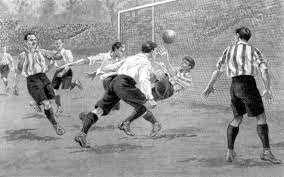

Soccer

Los deportes son actividades físicas competitivas que se realizan en distintas disciplinas y modalidades. Los deportes pueden ser individuales o en equipo, y su práctica puede ser recreativa o profesional. Además de promover un estilo de vida activo y saludable, los deportes también pueden tener beneficios sociales y emocionales, como fomentar el trabajo en equipo, la disciplina y la perseverancia.
El primer conjunto de reglas para el fútbol fue creado en Inglaterra en 1863, por la Asociación de Fútbol de Inglaterra (FA), y se convirtió en el deporte nacional del país. El fútbol se fue popularizando en otros países de Europa y América del Sur, y en 1904 se fundó la Federación Internacional de Fútbol Asociación (FIFA), que es la organización que rige el fútbol a nivel mundial.
El soccer es un deporte que se juega con un balón y dos equipos de once jugadores cada uno, que deben pasar la pelota hacia el arco del equipo contrario para marcar goles. El soccer es un deporte que requiere de habilidad, técnica, velocidad, resistencia y trabajo en equipo.
